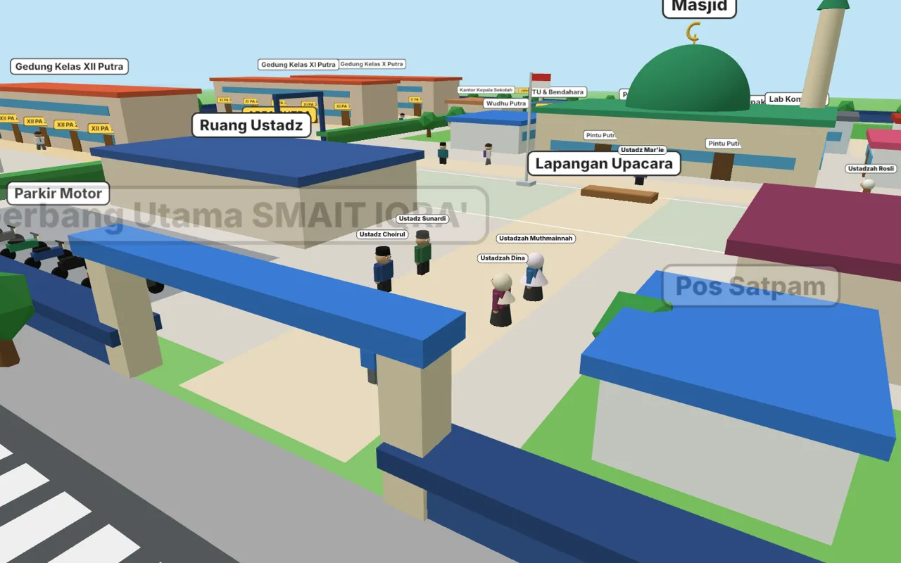
Berangkat dan disambut di gerbang
Sarapan, salim kepada orang tua, lalu jalan kaki atau naik motor. Lewat pukul 07.15 gerbang ditutup, dan yang terlambat berdzikir pagi sambil berdiri.
Jalani satu hari penuh sebagai siswa dalam game 3D: masuk kelas, sholat berjamaah, makan MBG, dan kerjakan tugas guru sambil bermain.
Gratis · langsung di browser HP atau laptop · tanpa instal
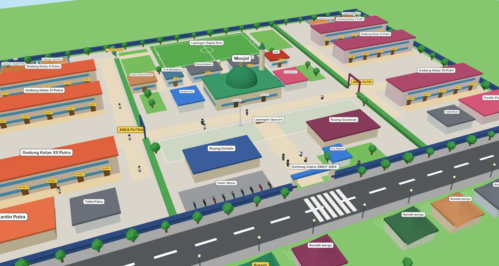
Jadwal pelajaran dan nama guru diambil dari jadwal asli sekolah. Setiap kelas X–XII, putra dan putri, punya harinya sendiri.

Sarapan, salim kepada orang tua, lalu jalan kaki atau naik motor. Lewat pukul 07.15 gerbang ditutup, dan yang terlambat berdzikir pagi sambil berdiri.
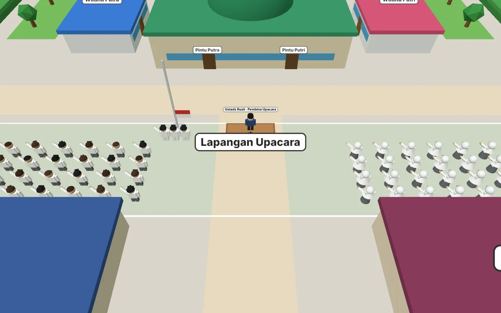
Barisan tertib, bendera dikibarkan, dan amanat dari pembina upacara.
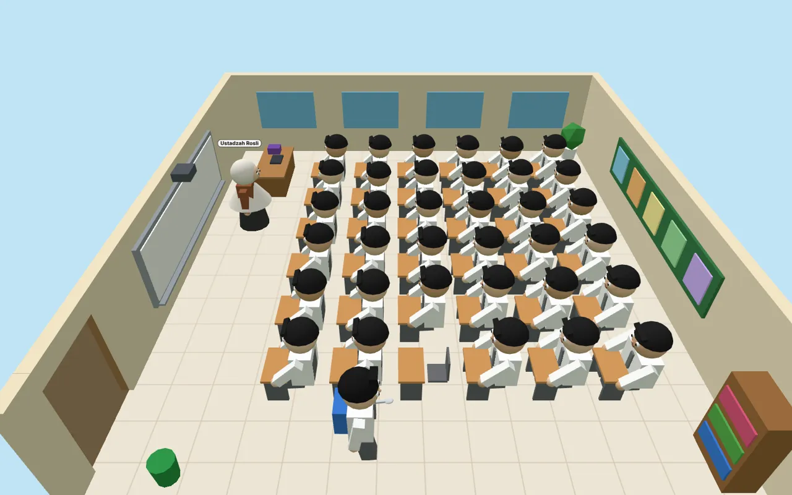
Ketuk pintu, ucapkan salam, taruh tas, lalu pilih pelajaran. Tugasnya berupa permainan.
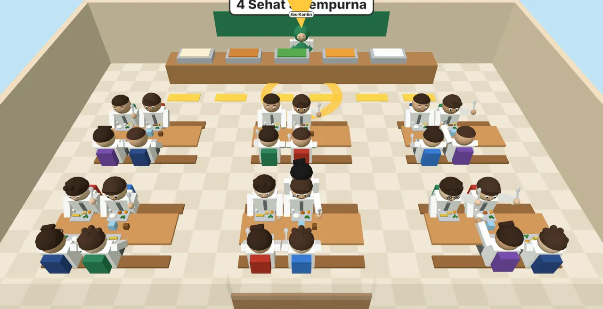
Susun nampan 4 sehat 5 sempurna, berdoa, lalu habiskan tanpa sisa.
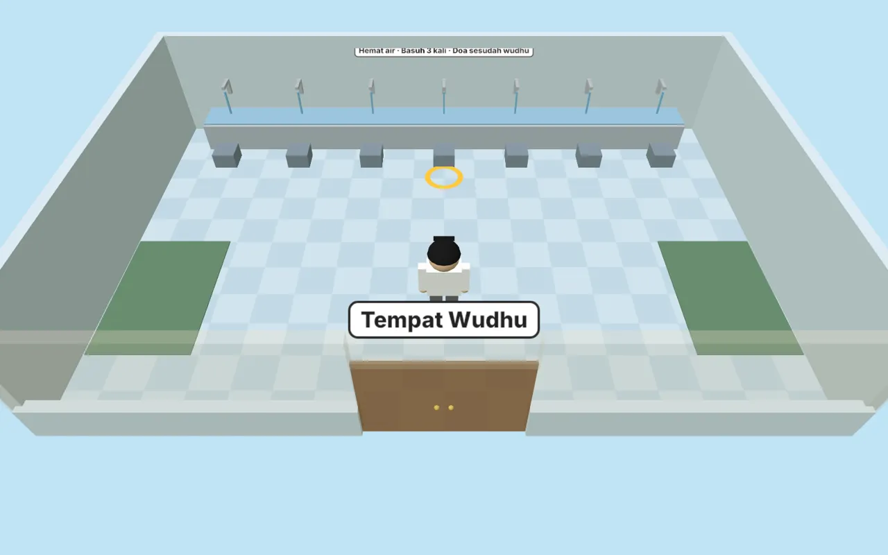
Azan berkumandang. Berwudhu dengan niat dan doa, lalu sholat berjamaah.
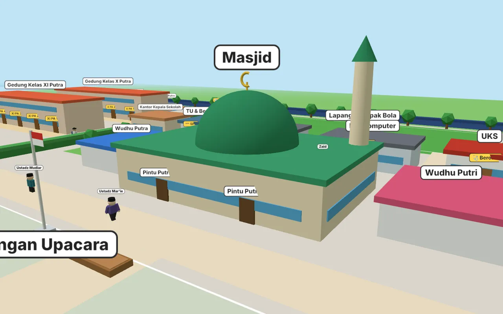
Sholat Ashar berjamaah, ambil tas di kelas, dan pulang. Tidur di rumah untuk menyimpan permainan dan lanjut ke hari berikutnya.
Area putra di barat, area putri di timur. Ketuk titik kuning untuk melihat setiap tempat.
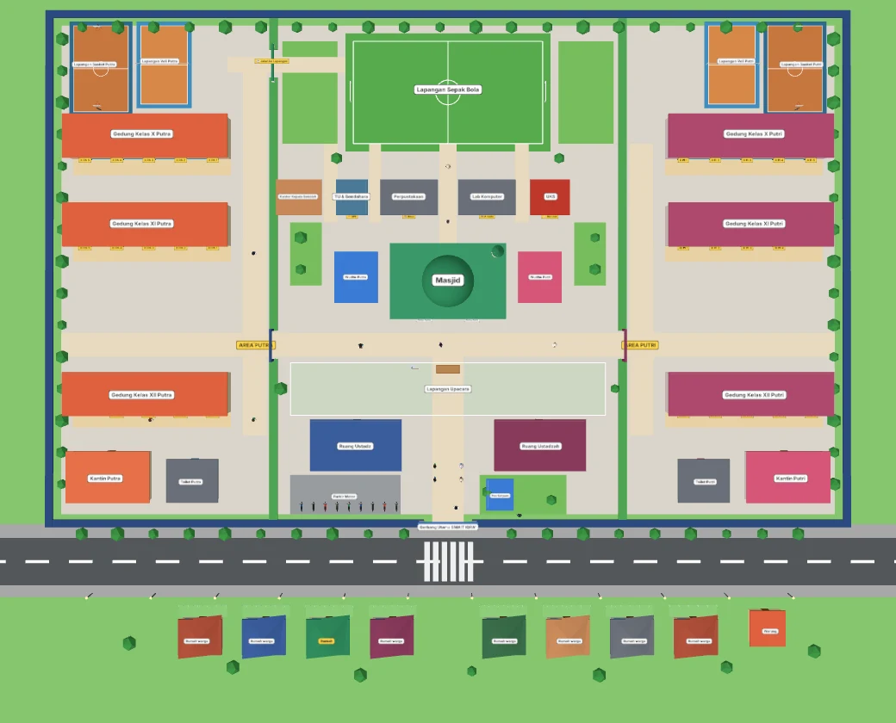
Bukan sekadar berjalan-jalan. Setiap kegiatan mengajarkan kebiasaan baik yang biasa dilakukan di sekolah.
Salam dan salim kepada guru sejenis. Kepada lawan jenis cukup salam dari jauh. Doa masuk toilet, doa makan, niat wudhu, Dhuha, dan mengaji. Putra dan putri tidak saling bercakap atau berjalan berdampingan.
Soal yang dibuat guru dimainkan dalam berbagai bentuk, bergantian setiap pelajaran.
Pilih nasi atau jagung, lauk, sayur, buah, dan susu. Keripik dan soda tidak termasuk.
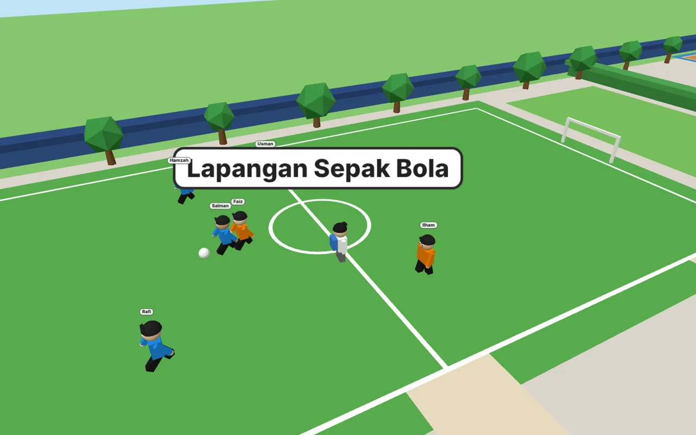
Sepak bola, voli, dan basket dengan papan skor 3 menit. Lari, lompat, tendang, oper, dan rebut bola sendiri.
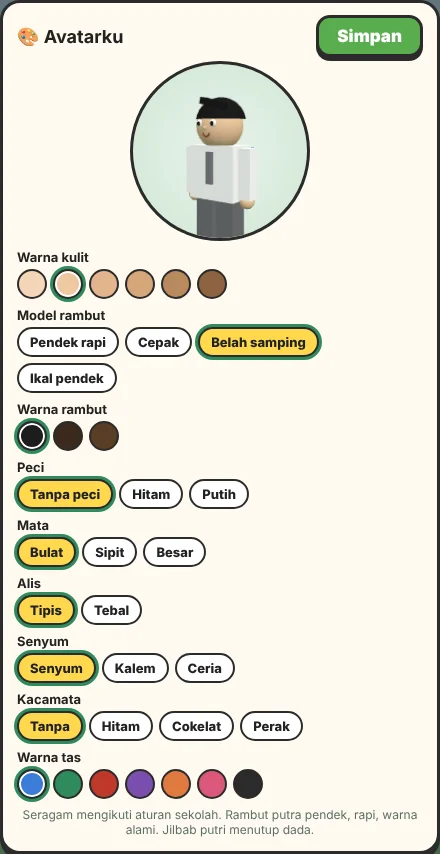
Atur warna kulit, rambut rapi, peci, jilbab yang menutup dada, mata, dan kacamata.
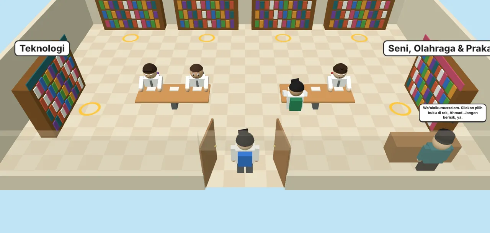
Rak buku per mata pelajaran. Materi yang ditulis guru di Panel Guru langsung tampil sebagai buku baru.
Ruang Ustadz dan Ustadzah, kantor kepala sekolah dan para waka, TU dan bendahara SPP/LKMS, UKS, lab komputer, kantin, wudhu, dan toilet.
Daftar sendiri dengan email di Panel Guru. Setelah disetujui admin sekolah, Anda bisa langsung memberi tugas.
Tidak perlu akun. Cukup nama, kelas, dan kode kelas dari guru.
Ketuk Main sekarang di HP atau laptop.
Atur avatarmu, lalu masukkan kode kelas dari guru agar nilaimu terkirim.
Panah menunjukkan tugas berikutnya. Tidur di rumah untuk menyimpan.